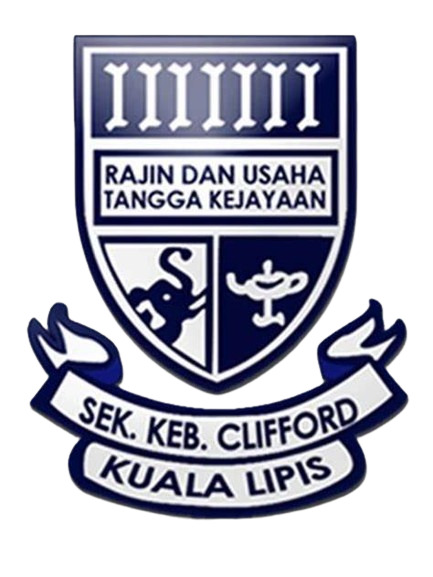
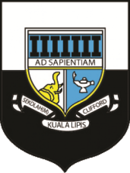
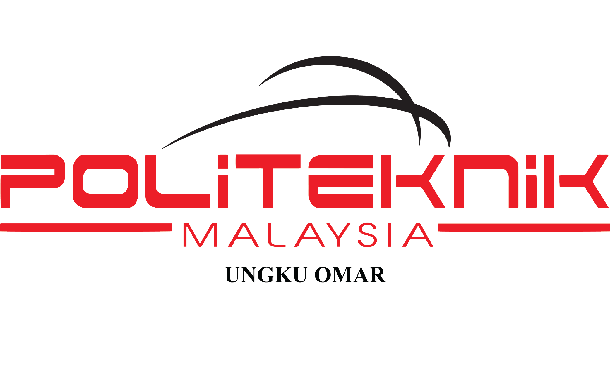

My primary school, Sekolah Rendah Kebangsaan Clifford, Kuala Lipis with its vibrant red-brick buildings surrounded by leafy playgrounds. This school has provided me with a nurturing environment where dedicated teachers and lively classmates made every day a memorable journey of learning and friendship.
Right after I sit for UPSR, I went to Sekolah Menengah Kebangsaan Clifford, Kuala Lipis. It is indeed a time filled with diverse experiences, forming memories that often last a lifetime. This is also where I sit for my SPM.
Then, I further my studies in Politeknik Ungku Omar, Ipoh Perak. This is where I received my Diploma in Banking and Finance. During my college experience, I embraced diverse perspectives and forged a lasting friendships.
 For now, I am currently doing my Degree in Bachelor of Business Administration (Hons.) Finance. I am on my fourth semester now and I have one semester left to complete my Degree.Throughout my degree, I immersed myself in a transformative journey of learning, fostering personal and intellectual growth.
For now, I am currently doing my Degree in Bachelor of Business Administration (Hons.) Finance. I am on my fourth semester now and I have one semester left to complete my Degree.Throughout my degree, I immersed myself in a transformative journey of learning, fostering personal and intellectual growth.